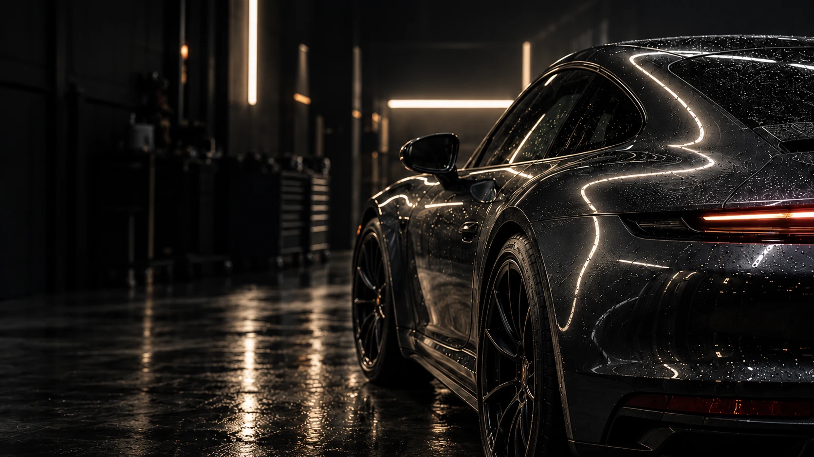
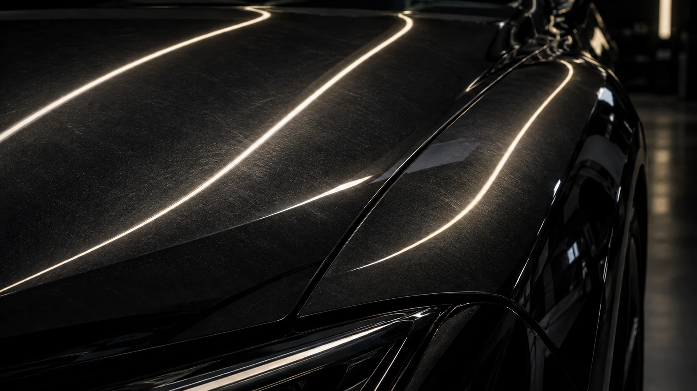
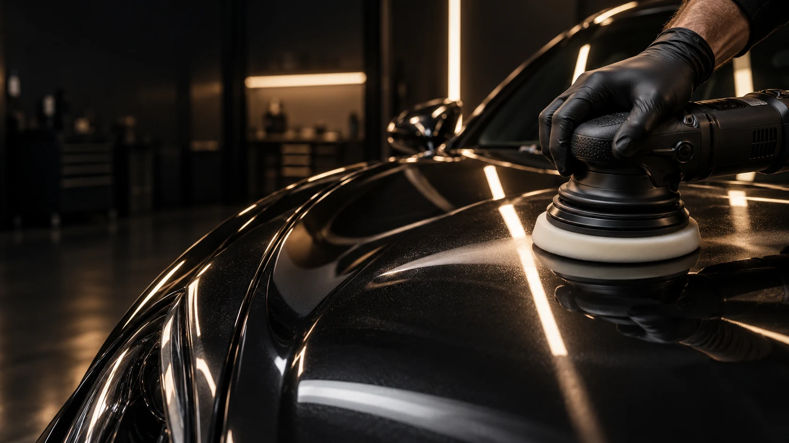
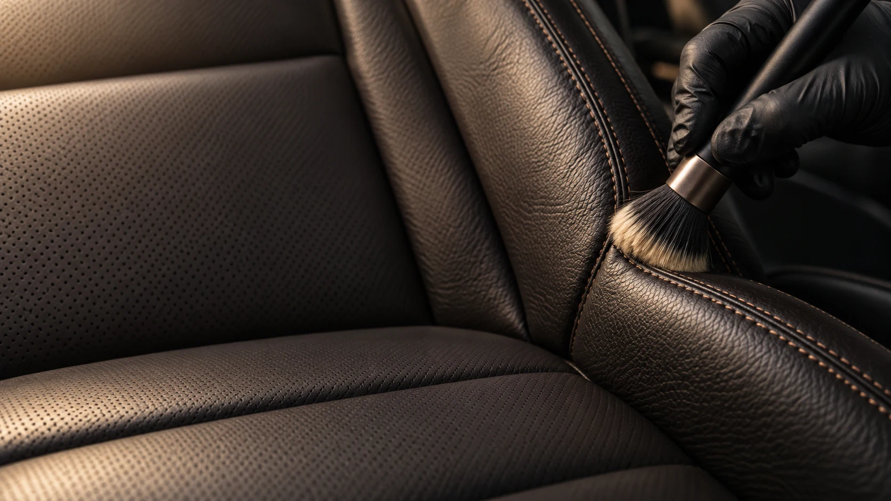
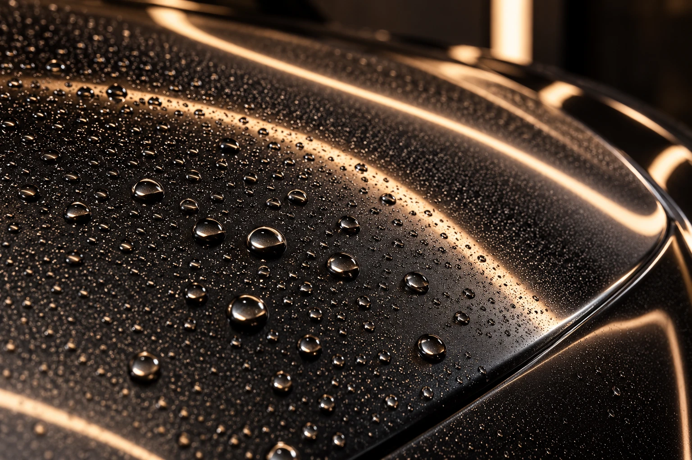
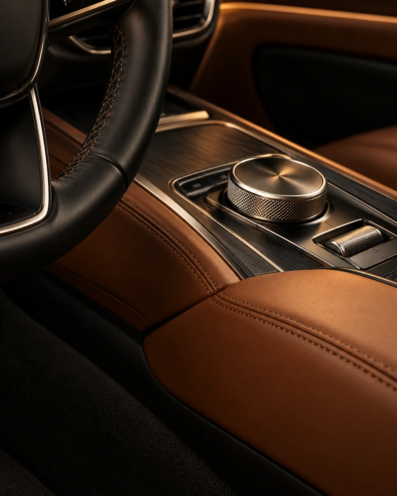

Деликатная мойка
Чистые принадлежности и подходящая химия помогают снизить риск новых следов на поверхности.

Свет помогает увидеть то, что теряется в обычном отражении: следы мойки, потускнение, мелкие дефекты лака.


Работа с помутнением и мелкими следами на лаке. Глубина коррекции зависит от состояния покрытия — её определяют после осмотра.
Обсудить полировкуОсмотреть поверхность под направленным светом, оценить следы эксплуатации и обсудить допустимую коррекцию. Полировка подходит не для каждого дефекта.
Добавить задачу в запросПонятная последовательность — от первого осмотра до рекомендаций по дальнейшему уходу.
Состояние лака, салона и чувствительных деталей. Обсуждение задач и ограничений.
Очистка загрязнений и подготовка поверхности под выбранный способ обработки.
Подбор метода и средств под конкретный материал, с вниманием к стыкам и краям.
Осмотр при разном освещении и понятный план дальнейшего ухода за автомобилем.

Лак, матовые элементы, кожа и декоративные вставки требуют разного подхода. Универсального состава для всего автомобиля нет.
Способ обработки выбирают после проверки материала и его состояния.
Визуальное исследование будущей студии. Здесь появятся реальные автомобили, задачи и фотографии выполненных работ.


Чистые принадлежности и подходящая химия помогают снизить риск новых следов на поверхности.
Покрытие не делает кузов неуязвимым. Его свойства и ограничения нужно обсуждать для конкретного состава.
Рекомендации по первой мойке и уходу за салоном зависят от выполненной обработки.
Расскажите, что хочется изменить.
Соберём понятный запрос на осмотр.